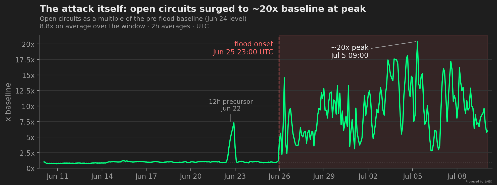
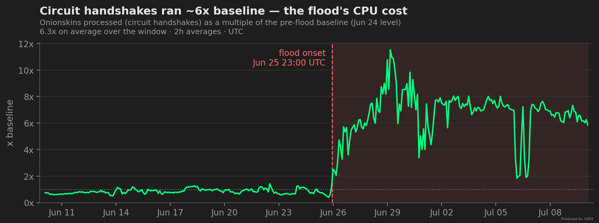
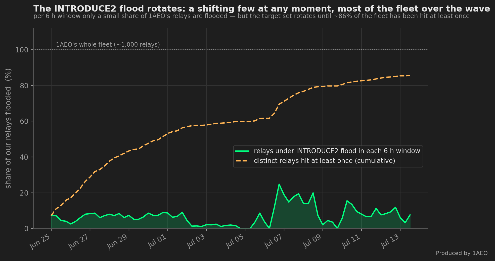
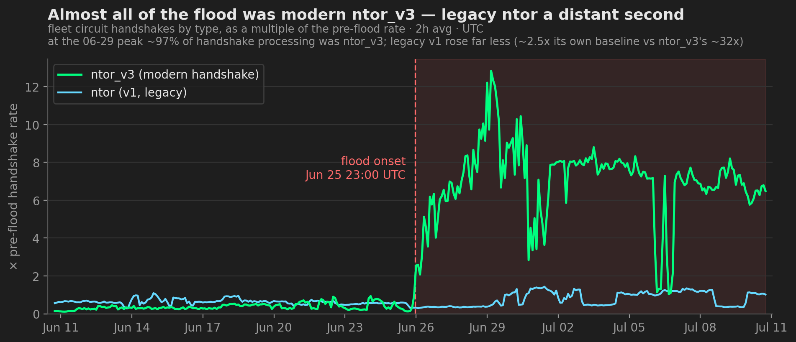
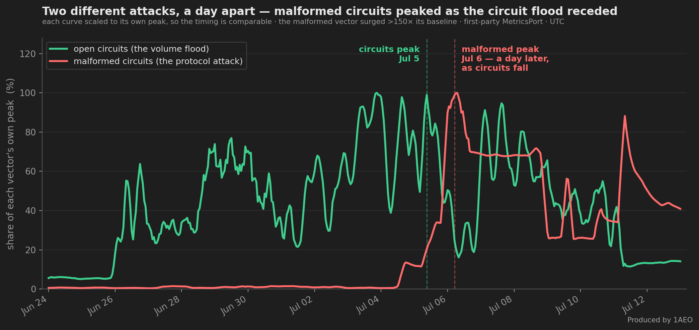

Anatomy of a Circuit-Building DoS: Four Waves on a Guard Fleet
Part 2 of a five-part series on the June–July 2026 circuit-building DoS. 1. The Tor Network Is Under a Circuit-Building DoS Wave — the network-wide view from Tor's public data. 2. Anatomy of the Attack (you are here) — the four waves and how each one works. 3. What It Actually Costs — the CPU and memory bill, and how 1AEO ranked. 4. The Flood Below Tor — the connection flood Tor's own counters cannot see. 5. Defending Against Circuit-Building DoS — better metrics and the protocol fixes we're asking for.
Since June 25, 2026, 23:00 UTC, 1AEO's guard-relay family — about 10% of the Tor network — has been under a sustained circuit-building denial-of-service wave: open circuits at ~20x baseline peak and ~8.8x on average across the whole window, most of them near-idle, while bandwidth barely moved. This post is about the attack itself — what a circuit-building DoS is, and how this one arrived as four distinct waves offset in time, tripping Tor's built-in defenses in turn and riding Tor's own onion-service and path machinery to pick which relays it hit. A companion post covers what absorbing it cost — the CPU it burned, the memory it exhausted, and how 1AEO's fleet ranked against the rest of the network: What a Circuit-Building DoS Actually Costs: How 1AEO's Guard Fleet Held. Every figure here is from 1AEO's own MetricsPort telemetry, fleet-wide, times UTC, cross-checked against Tor's public record.

What Is a Circuit-Building DoS? #
Every circuit starts with a CPU-costly cryptographic handshake (an "onionskin"), and every open circuit holds memory. Built at scale and left idle, circuits load a relay's CPU and RAM while moving almost no traffic — exactly the fingerprint above. We run guard relays, the first hop of a Tor circuit. The stress signals we recorded are the ones documented in the Tor Project's relay overload guide (dropped ntor onionskins, OOM invocations, TCP exhaustion), and the "introduction" load maps to the introduction-point step of the onion service protocol.

The Four Waves #
Read as a whole, the wave is really four attacks offset in time, not one blended assault. An onion-service INTRODUCE2 flood peaked first, on 06-27, then collapsed to near-zero. The circuit-creation flood surged into that gap — onionskin processing peaked 06-29, open circuits 07-05. Then a third signal appeared: malformed, protocol-violating circuits (Wave 3 below) sat at baseline through the flood's first week, then surged more than 150x. And weeks later a fourth arrived that looked nothing like the others: a directory-write surge (Wave 4 below) that made relays transmit far more than they received, peaking 07-23. The four overlap at the edges but their peaks never coincide — the signature of an attacker rolling through tools rather than one combined assault.
![Time-series chart, June 20 to July 28 2026, four signals from 1AEO fleet telemetry each normalized to its own peak so only the timing is compared. Amber, the onion-service INTRODUCE2 flood, peaks first on June 27 then collapses. Green, open circuits, is flat until the June 25 onset then surges to its peak on July 5 and stays high into late July. Blue, malformed protocol-violating circuits, sits at zero through July 4, surges from July 6, runs elevated for two weeks and reaches its maximum on July 20 before stopping that night. Red, the directory-write surge measured as excess outbound bytes, is flat near zero all month then spikes to its peak on July 23 and ends July 24. Markers along the bottom show malformed circuits switching off July 20, the directory-write surge ending July 24, and INTRODUCE2 switching off July 26, leaving only the circuit flood still running.](images/circuit-building-dos-wave-june-2026-chart-fourphases.png)
The timeline below lays out the four phases in chronological order; the sub-sections that follow give the supporting data for each. Times UTC; metrics from MetricsPort, fleet-wide.
| When (UTC) | What we observed |
|---|---|
| Jun 22, 12:00–24:00 | 12h precursor burst: open circuits ~5x normal with no matching onionskin or stream spike — a probe of idle circuits — then two quiet days. |
| Jun 25, 23:00 | Onset: onionskin processing ~2.5x within 30 minutes; open circuits ~6x within 3 hours. |
| Jun 26–27 | Wave 1 crests: introduce2_rejected bursts an order of magnitude above normal (peak Jun 27 03:00); conn_rejected ~5x baseline, bursts to ~10x. |
| Jun 26–28 | Host resources start failing: large-host CPU climbs from ~30% to 90%+; per-relay RAM begins its upward ratchet; our smallest host starts dropping onionskins (the large hosts never do); and the most heavily-flooded relays begin flapping the consensus Running flag under the load (a reachability effect, not a lost Guard flag). |
| Jul 1–5 | Free memory reaches zero on the hardest-hit hosts and the kernel OOM-killer begins terminating relay processes (each auto-restarting) — repeatedly reaping relays that had bloated to many times their baseline size. |
| Jul 5, 09:00 | The 20x circuit peak — the event's maximum so far — and the malformed-circuit surge (Wave 3) begins. |
| Jul 6–10 | Circuits decay toward ~5–6x but CPU stays pegged and RAM stays high; the malformed-circuit vector runs at its crest. |
Wave 1 — The Onion-Service INTRODUCE2 Flood (peaked 06-27) #
The first wave hit Tor's onion-service machinery. The INTRODUCE2 rejected counter — onion-service introduction requests turned away by the intro-point rate limiter — burst an order of magnitude above normal, peaked 06-27, then collapsed to near-zero before the circuit flood took over. Walking the Heartbeat logs (the DoS mitigation since startup and Circuit handshake stats lines every relay emits) across every large host for the full wave, two things held on every relay:
- The defenses really are firing, everywhere. Every relay's own DoS-subsystem counters climbed steadily throughout the wave — circuits rejected, and same-address concurrent connections rejected, both many times over their pre-flood levels — not a dashboard artifact, but per-process counters climbing on every instance. Tor's built-in, consensus-driven defenses were doing the work.
- The introduction flood rotates across the fleet. The
INTRODUCE2 rejectedcounter is wildly uneven at any instant: a minority of relays absorb almost all of it (the busiest relay ran tens of times the median, and a handful of relays take the bulk of it), while most sit near zero. A relay only takes INTRODUCE2 traffic while it serves as an introduction point, and that role rotates — so the target set shifts over time. Across our whole fleet (~1,000 relays), in any six-hour window only about ~7% of our relays were under the introduction flood at once, yet ~86% were hit at least once over the wave.
The chart below tracks that rotation: only a small share of relays are under the introduction flood in any given window, but the set keeps shifting until most of the fleet has been hit.

Why these relays, and not others? It comes down to how onion services choose the relays they lean on — three roles that are easy to conflate but are selected in completely different ways:
- HSDir — stores an onion service's descriptor. Chosen by hashring position near the service's key.
- Introduction point — receives
INTRODUCE1cells from the connecting side and forwards them asINTRODUCE2to the service. Chosen by the onion service, ~3 at a time, from relays flagged Stable (withRunning/Validand a usable descriptor) — not by the HSDir or Guard flag — and rotated. - Guard — the first hop of a circuit (an edge-built circuit's, or a service's own, entry).
The introduction flood rides the middle role. Tor's own source picks intro points by uptime — requiring the Stable flag, a current descriptor, and modern-circuit support, but not the HSDir or Guard flag. Each intro point retires once it has relayed a capped number of INTRODUCE2 cells — a random value between 16,384 and 32,768 by default (Tor's or.h) — or after 18–24 hours, whichever comes first. Under the flood, intro points reach that INTRODUCE2-cell cap well before the time limit, so the role rotates faster than usual and services churn through fresh relays more quickly — the rotation the chart above captures. The attacker doesn't get to direct which relays absorb the load; Tor's intro-point rotation spreads it across the whole Stable pool, which on our fleet is essentially every relay.
The public record makes the decoupling from flags concrete: only about three-quarters of our relays even hold the V2Dir directory flag (Onionoo), yet essentially all of them cycle through INTRODUCE2 duty — because the load follows the introduction-point role, which Tor selects by uptime, not by any directory flag. (A current Onionoo snapshot even shows zero HSDir flags across the fleet — a transient after the 07-11 restart, which resets the multi-day uptime an HSDir must re-accumulate, not a sign we don't run them.)
That introduction flood had a quieter twin on the other onion-service role. While introductions rotated across intro points, a parallel wave of descriptor uploads landed on the relays acting as HSDirs — and it left a mark in our own logs. Across the fleet, relays holding onion-service descriptors pushed their descriptor cache past its size limit and pruned it back over 350,000 times, each prune shedding a near-identical ~50 MB to drop back under the ~1.6 GiB default cache limit (one-fifth of MaxMemInQueues). A fixed-size overrun repeated that many times reads as sustained bulk descriptor uploads, not organic traffic. The telling part is the timing: this cache pressure was confined to the late-June descriptor wave and never returned — not even when introductions surged again in July (below). It is a second, distinct resource the same campaign taxed — a memory cost on the directory-cache side, separate from the CPU cost of the circuit wave that follows.
![Time-series chart, June 20 to July 14, 2026. A red area shows how many times per hour 1AEO relays holding onion-service descriptors pruned their descriptor cache back to its roughly 1.6 GiB limit: near zero until June 24, rising to a crest of about 4,600 per hour around June 27 to 28, falling to zero by July 1, and flat at zero afterward. An amber line shows the onion-service introduction flood as a multiple of its pre-flood baseline, cresting with the prunes around June 27 and surging again in early-to-mid July while the prunes stay at zero. A dashed line marks the June 25 circuit-flood onset.](images/circuit-building-dos-wave-june-2026-chart-hsdir-cache.png)
Wave 2 — The Circuit-Creation Flood (peaked 07-05) #
The second wave is the main event: a sustained flood of circuit-creation requests. Broken down by handshake type, it was overwhelmingly ntor_v3 — the modern circuit handshake current Tor software negotiates. At the onionskin peak (06-29), total handshake processing crested at ~11.5x the pre-flood rate, and ntor_v3 made up ~97% of it, while legacy ntor (v1) was still near its pre-flood rate; even at its own later peak, v1 reached only about 2.5x baseline — a fraction of ntor_v3's ~32x. So the load looks like up-to-date Tor code at scale, not an old or exotic tool. Open circuits crested at ~20x baseline on 07-05. This is the wave that drove the CPU, drop, and memory costs detailed in the companion cost post.

tor_relay_load_onionskins_total{action="dropped"} labels every ntor-family drop as type="ntor" — it never reports ntor_v3 drops separately, even when ntor_v3 is what actually overflowed. The tor_relay_load_onionskins_total{action="processed"} counter records the true handshake type; the same metric with action="dropped" records the (collapsed) queue type. Don't read the drop-side type label as the attacker's handshake version.
Wave 3 — Malformed, Protocol-Violating Circuits (peaked 07-06) #
The flood took on a malformed character in its second week. Tor's tor_relay_circ_proto_violation_total (which counts circuits it closed for violating the circuit protocol) sat near its baseline through the flood's first week, then surged more than 150x, peaking on 07-06. The decisive tell that this is a separate phase and not a byproduct: it runs inverse to circuit volume — at the 07-05 circuit peak the malformed rate was still low, then a day later, as raw circuit volume fell back, malformed circuits spiked. The attacker shifted tools. Legitimate traffic essentially never sends malformed circuits at scale, so this is a clean fingerprint of the attacker's tooling — but it is also the one part of the attack no outsider can corroborate: circ_proto_violation lives only on a relay's own MetricsPort, in no CollecTor archive or Onionoo field, so this signal rests entirely on our own telemetry. It ran elevated for a fortnight, reached its highest hour on 07-20 — and then stopped that night. At 07-20 23:00 UTC the rate fell from thousands per second to a couple of dozen within an hour, and it has stayed there since. We can only say it stopped on our relays: nothing in the public archives records this signal, so we cannot tell whether the tool was switched off globally or simply pointed elsewhere.

Wave 4 — The Directory-Write Surge (peaked 07-23) #
Three weeks after the onset, a fourth phase arrived that looked nothing like the first three. For the entire preceding year — through both July waves and the malformed peak — our fleet wrote and read roughly the same number of bytes: a written-to-read ratio between 0.99 and 1.07. Then, from 07-19, relays began transmitting far more than they received, and on 07-23 the ratio hit 2.15 — the fleet pushing out roughly twice what it took in for about a day. It ended as abruptly as it began: by 07-24 the ratio was back under 1.05, and it has stayed there.
Small requests in, large responses out is the signature of directory serving — relays answering descriptor and consensus fetches. Two independent checks agree. Within our own fleet the divergence tracked the directory role exactly: relays that serve directory data diverged by 2.4–2.7x, while a host configured not to cache directory data sat at 1.01 throughout. And the effect was network-wide, not ours alone: Tor's public archives record directory-write traffic rising from a baseline near 185 TB/day to 808 TB/day on 07-22 — about 4.4x — starting the same day our own ratio first moved. Other operators reported the same shape at the same time on the tor-relays list.
Two readings fit the evidence and we cannot separate them from our side. It may be a descriptor-fetch flood as a new attack mode — the timing is suggestive, arriving days after the malformed vector's last big push and one day before it switched off. Or it may be concentration: the onion-service directory had been driven to a record low, so the relays still holding the role absorbed the whole network's descriptor demand (we cover that collapse in a separate post). Both push writes far above reads on exactly the relays that still serve directory data. One detail argues the first is at least partly true: the surge began before the directory's deepest point, so it cannot be purely a symptom of the shortage.
This phase also did something none of the previous three managed. On 07-23 it pushed 1AEO's own overload count off a baseline it had held for a year — not through CPU exhaustion, which stayed clear throughout, but by ballooning outbound cell queues until Tor's own memory handler began evicting them. Every eviction makes a relay self-report as overloaded. No relay failed and none dropped out of the consensus; the defense was working, loudly. We tell that story in full in the year-long view.
Same Flags, a Rotating Handful Under Pressure #
One more pattern only per-relay telemetry can show. On paper, most of our fleet is interchangeable: in the Jun 24 consensus, 754 of our relays held the Guard flag, and 468 shared the exact same seven consensus flags (another 286 differ only by the HSDir flag) — by their consensus flags alone, these relays are indistinguishable. Yet at any given hour, roughly ten relays held ~70% of all our open circuits — the hourly median through the flood, typically between ~55% and ~79% (the middle 80% of flood hours). At the Jul 5 crest the top ten carried 67%, and the single busiest relay alone held ~11% — about 850x the median reporting relay. Near-identical flags; nearly three orders of magnitude apart in load.
And the cast rotates. The twenty heaviest relays on Jun 29 and on Jul 5 have almost no overlap — at most one of twenty; Jul 5 and Jul 8 share just four of twenty. Across the flood, 497 distinct relays — more than half of those reporting — took a turn in the top ten: about three of the ten swap out every hour, 70% of the set is replaced within six hours, and 90% within a day. This is not a fixed target list: which relay takes the next extreme turn is set moment to moment by Tor's own path machinery, not by anything about the relay an attacker could choose in advance — as the next paragraphs show.
![Two stacked panels, June 24 to July 11 2026, hourly. Top: the share of all our open circuits held by the top-10 (amber) and top-50 (dim amber) relays. Before the June 25-26 onset the top-10 holds mostly 10 to 20 percent; from onset it jumps to a band around a 70 percent flood median and stays in that band almost every hour. Bottom: the count of relays newly entering the top-10 each hour, oscillating around a flood median of about 3 of 10, with a callout noting 70 percent of the top-10 is replaced within six hours, 90 percent within a day, and 497 different relays took a turn over the flood — only about ten at any instant.](images/circuit-building-dos-wave-june-2026-chart-subset-pressure.png)
So what picks the heavy set? Not weight, and not the fastest relays — if anything, the opposite. Ordinary Tor circuits choose each hop at random, weighted by a relay's published capacity, so normal load tracks a relay's consensus weight (across our fleet the two track closely, a rank correlation of ~0.9, computed from our own per-relay circuit counts joined to the public consensus weights — measured among the relays that stayed in the consensus, since a relay saturated enough to flap out of it under load (the reachability effect noted in the timeline above) carries no current weight and drops out of this correlation). This flood breaks that rule at the very top. At the Jul 5 peak, across the relays we can match to a published consensus weight, the ten carrying the most open circuits held only a few percent of that weight — yet carried more than ten times that share of the circuits — and they were mostly middle relays, not our biggest guards. The relays with the highest weight carried almost none of the flood. So "the flood just goes to the fastest relays" is exactly backwards.
That inversion matches the signature of onion-service circuit building. To resist deanonymization, an onion service doesn't spread its circuits by weight — it pins them through a small, fixed set of middle relays (Tor's default is four of these "vanguards" per service) and only rotates that set on a slow timer. A flood of onion-service circuits therefore piles onto whichever relays are currently pinned — far out of proportion to their capacity — and the heavy set drifts as those pinned sets rotate and as the attack churns through services. We see a faint version of the same pattern even before the flood; the attack roughly doubles the disproportion and multiplies the volume. So the rotating concentration isn't the attacker hand-picking relays hour by hour — it is consistent with the flood riding Tor's own onion-service machinery, which is also why no single relay stays buried for long. (These are open-circuit counts — mostly idle circuits whose cost is memory; the flood's CPU cost lands separately, on the guard position, as the network-wide post shows.)
Tor's Built-In Defenses Engaged Against Each Vector #
Tor is not defenseless against this class of attack — every relay ships with a set of DoS mitigations, and our fleet's own tor_relay_dos_total counters show them firing throughout, each attack vector tripping its matching limit. The onion-service introduction flood (Wave 1) hit the intro-point defense hardest, peaking near 9,600 rejections/second around Jun 27; the circuit-creation flood (Wave 2) drove the per-source circuit-creation-rate limit (DoSCircuitCreation); and the per-source connection cap (DoSConnectionMaxConcurrentCount) and connection-rate limit rejected connection-level abuse in the background:
![Four stacked timeline panels, June 24 to July 13 2026, from our fleet's MetricsPort, each on its own scale. Onion-service introductions rejected (onion-service intro-point defense) spikes to about 9,600 per second around June 27. Circuit creations rejected (per-source DoSCircuitCreation limit) rises with the circuit flood, peaking about 1,700 per second on July 9. Concurrent connections rejected (the per-source DoSConnectionMaxConcurrentCount cap) climbs to about 31 per second. Connections rejected (per-source connection-rate limit) peaks about 5 per second on June 29. Each defense engaged when its matching attack vector was active.](images/circuit-building-dos-wave-june-2026-chart-dos-defenses.png)
These limits aren't the operator's to choose: Tor's directory authorities vote them as consensus parameters that every relay applies by default, and we run those defaults unchanged. Through this flood the authorities had them set aggressively — a single source can open new circuits no faster than 2 per second (burst 60) once it holds a second connection, and may keep no more than 50 simultaneous connections to any one relay process (DoSConnectionMaxConcurrentCount). Because that connection ceiling is enforced per process, a single source's effective limit on a host scales with the number of relays running there — a gap we take up in the defenses post. (The onion-service introduction defense is set separately, per hidden service by its operator, not by the authorities.)
These defenses did real work — but they cap the rate, not the total volume. What they reject is only the excess above the limit; everything under it still has to be absorbed. Absorbing it is what drives the CPU and memory costs — and, from Tor's public data, sets how 1AEO's fleet ranked against the rest of the network. That's the next post: What a Circuit-Building DoS Actually Costs: How 1AEO's Guard Fleet Held.
For the network-wide picture from Tor's public data alone, see The Tor Network Is Under a Circuit-Building DoS Wave; for the monitoring lessons and the protocol fixes we're asking for, see Defending Against Circuit-Building DoS.